Explore Fukuoka
A Brief History
Fukuoka, the vibrant capital of Kyushu, seamlessly blends ancient traditions with a forward-thinking modern aesthetic. Positioned historically as Japan's closest major city to the Asian mainland, it has served as a pivotal gateway of cultural and economic exchange for millennia. Today, the city is globally celebrated for its mouthwatering Hakata ramen, energetic yatai (open-air food stalls) culture, and striking contemporary architecture. From the serene ruins of Fukuoka Castle to the ultra-modern waterfront developments, Fukuoka offers an unparalleled urban experience that reflects the dynamic heartbeat of southern Japan.
Attractions Map
Top Sights & Activities
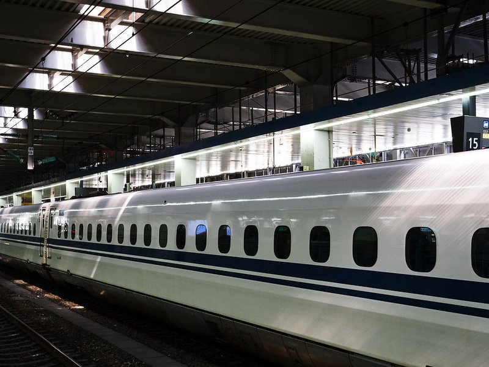
Hakata Station
The massive, ultra-modern central transit hub of Kyushu, featuring an incredible array of subterranean food halls, sleek department stores, and a beautiful rooftop garden offering sweeping views of the city.
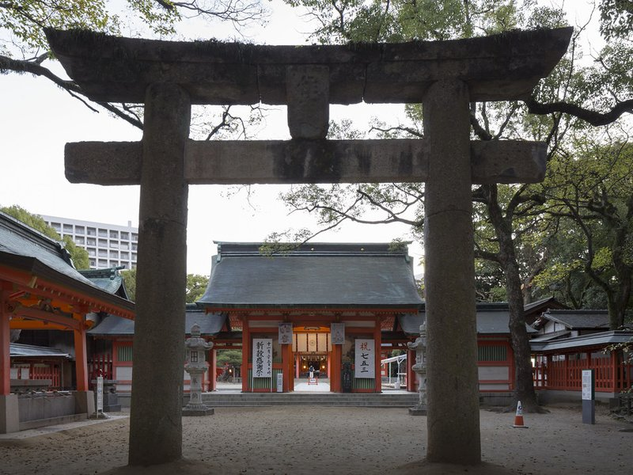
Sumiyoshi Shrine
One of the oldest Shinto shrines in Kyushu, featuring classic, striking vermilion architecture. It has historically served as a vital spiritual guardian for sailors and maritime merchants navigating the nearby bay.
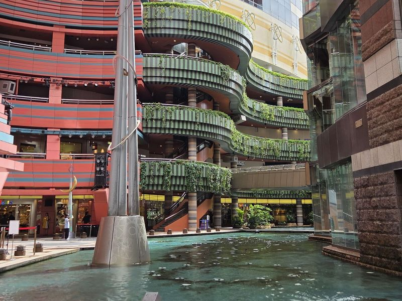
Canal City Hakata
A massive, radically designed 'city within a city' entertainment complex, famously built around an artificial central canal that features spectacular daily water and light shows.
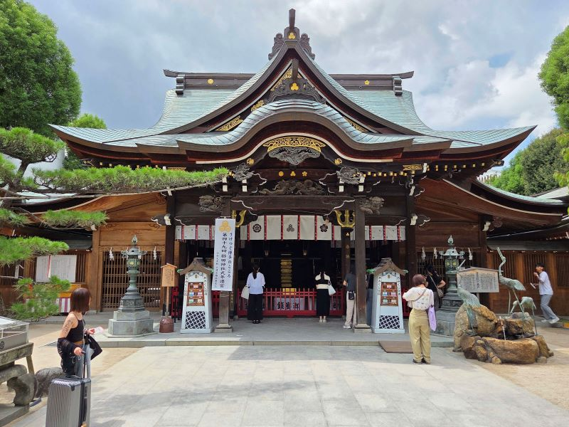
Kushida Shrine
The deeply revered, historic spiritual heart of Hakata, famously hosting the city's most explosive and massive summer festival, the Hakata Gion Yamakasa, and permanently displaying a colossal, intricately decorated festival float.
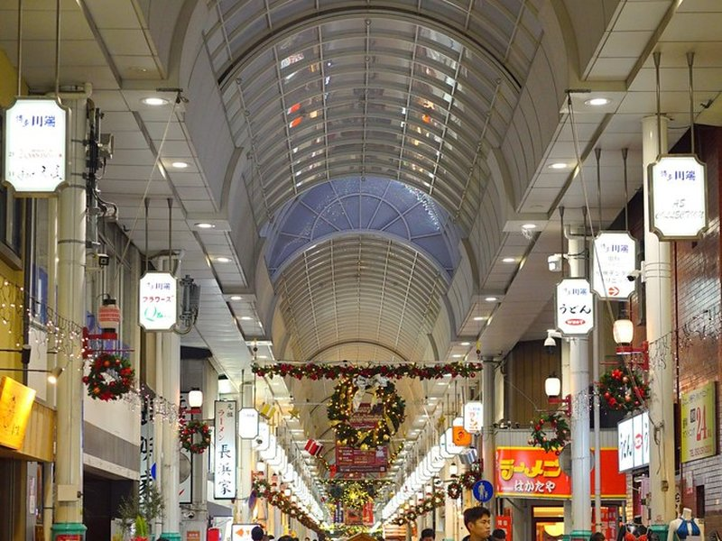
Kawabata Shopping Arcade
Fukuoka's oldest shopping street, an authentic, bustling covered arcade stretching over 400 meters, densely packed with traditional craft shops, local tea houses, and the vibrant spirit of old Hakata.
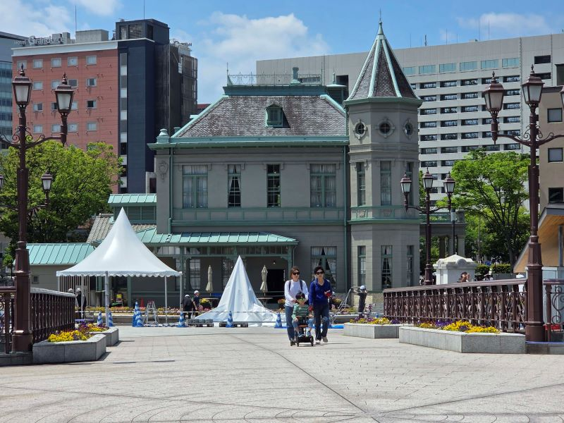
Kihinkan Hall
A beautifully preserved, elegant French Renaissance-style wooden building constructed in 1910 to host distinguished guests, offering a charming architectural contrast to Fukuoka's modern skyline.
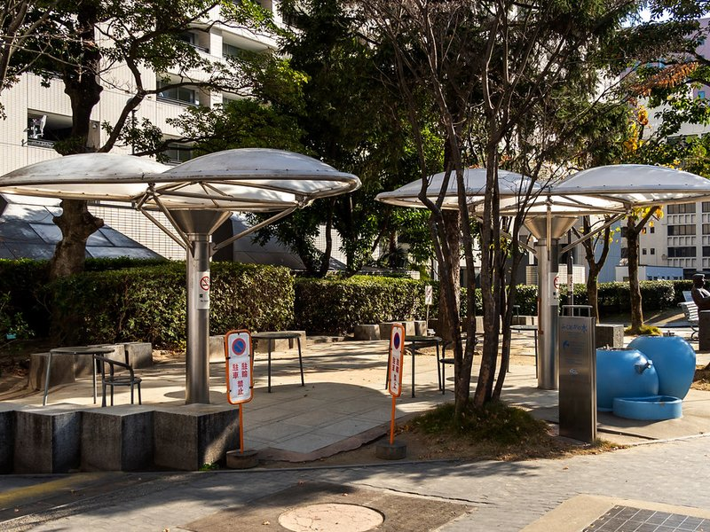
Tenjin Central Park
A lush, inviting green space in the absolute heart of the commercial district, famously flanked by the striking ACROS building, which features an incredible terraced, step-garden facade.
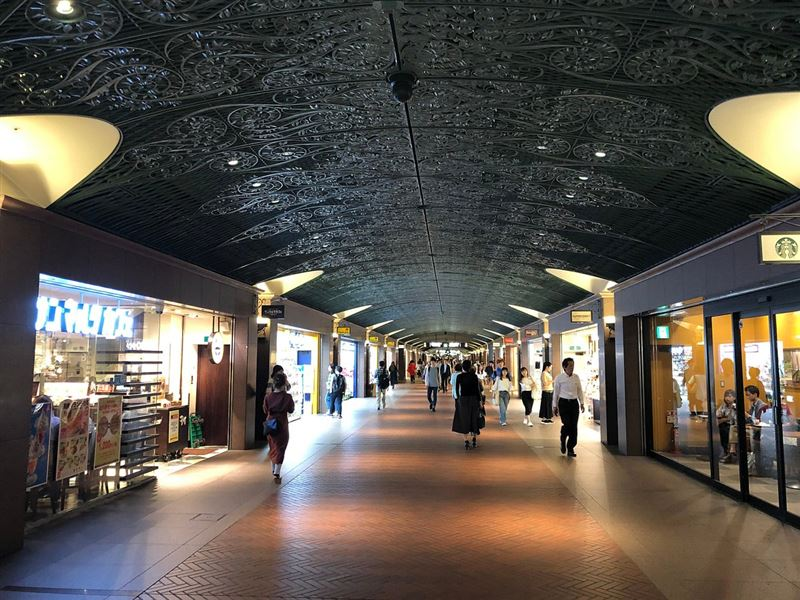
Tenjin Underground Mall
A massive, elegantly designed subterranean shopping labyrinth stretching beneath the city center, featuring beautiful 19th-century European-style ironwork ceilings and an endless array of chic boutiques.
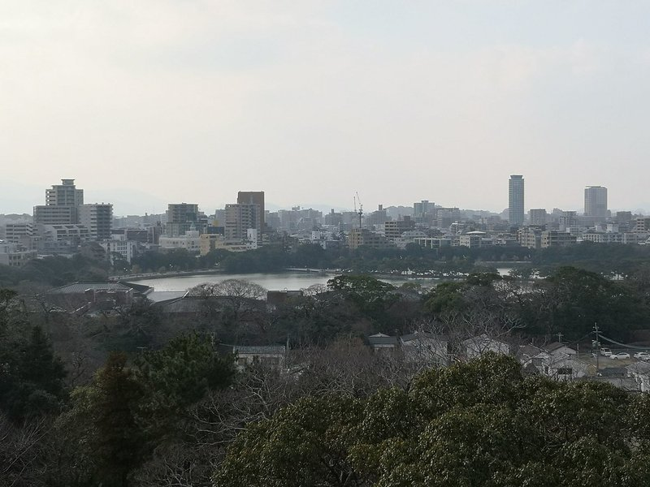
Fukuoka Castle Ruins
The peaceful, stone-walled remains of a once-massive 17th-century feudal fortress, now serving as one of the city's most beloved and scenic viewing spots, especially during the vibrant spring cherry blossom season.
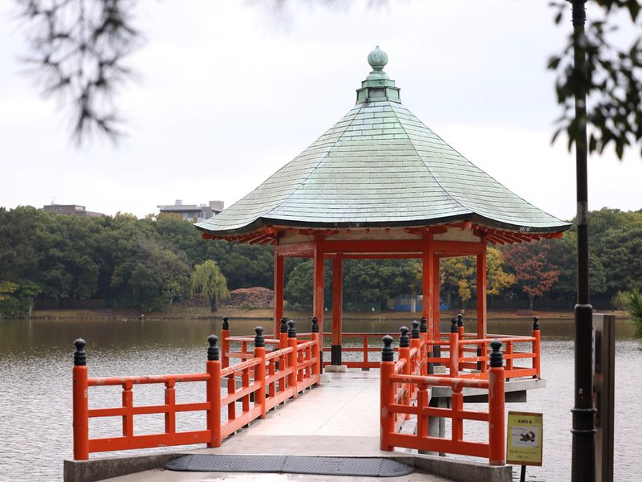
Ohori Park
A vast, exceptionally elegant city park designed around a massive central pond, offering a tranquil urban oasis of traditional Japanese gardens, weeping willows, and beautifully arched stone bridges.
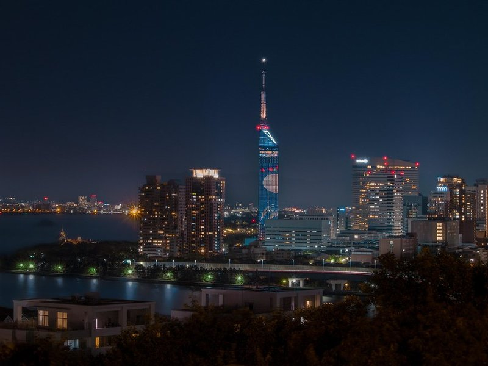
Fukuoka Tower
Standing as Japan's tallest seaside tower, this striking, mirror-clad architectural marvel offers breathtaking, uninterrupted 360-degree panoramic views of the city skyline and the sparkling ocean.
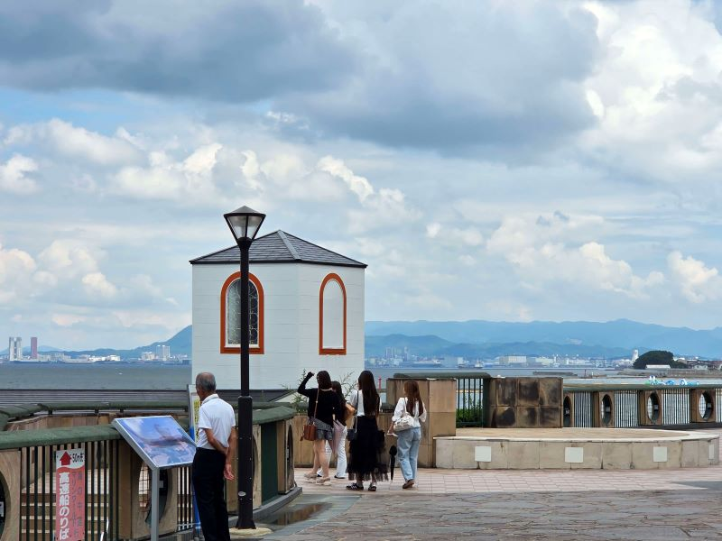
Momochi Seaside Park
A meticulously designed, modern artificial beach featuring sleek waterfront architecture, high-end shopping, and a remarkably relaxed, resort-like atmosphere right at the edge of Hakata Bay.
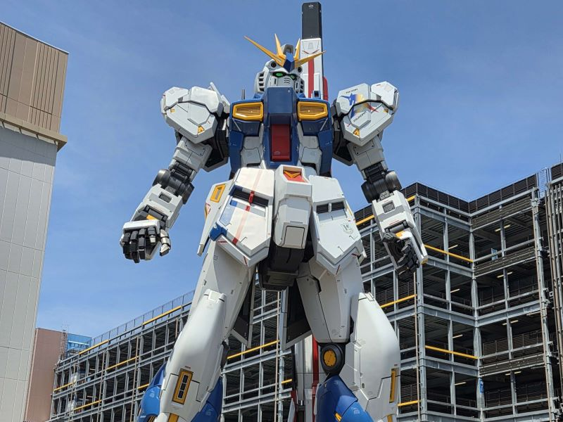
Life-Size RX-93ff Gundam Statue at LaLa Port Fukuoka
A towering, incredibly detailed 1:1 scale replica of the iconic RX-93ff Gundam mecha, serving as a spectacular, futuristic monument to Japan's massive anime and pop-culture phenomenon.
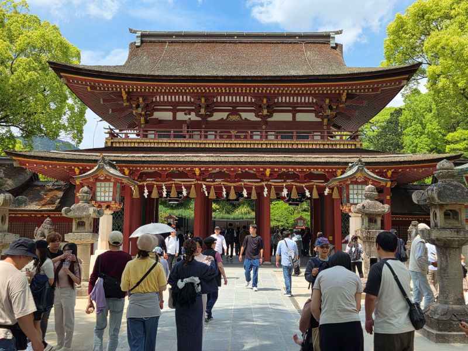
Dazaifu
A highly prestigious, historically significant Shinto shrine dedicated to the spirit of Sugawara no Michizane, revered as the deity of learning. It is famous for its beautiful plum blossoms and traditional approach lined with historic shops.
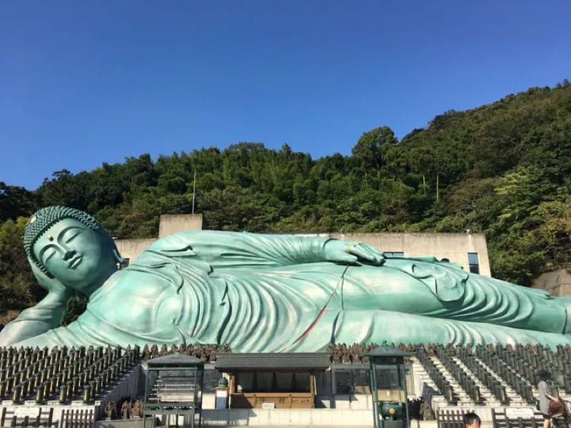
Nanzoin
Home to an astonishingly massive reclining bronze Buddha, this serene and deeply spiritual temple complex tucked away in the lush forested hills offers an awe-inspiring, off-the-beaten-path pilgrimage experience away from the bustling city.